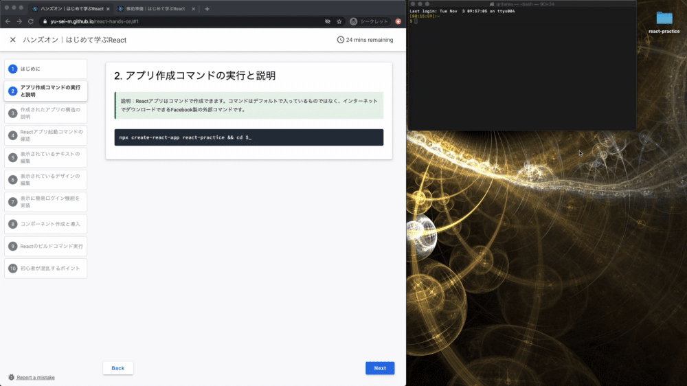

ハンズオンの流れ
- はじめに（ハンズオンの流れ）
- アプリ作成コマンドの実行と説明
- 作成されたアプリの構造の説明
- Reactアプリ起動コマンドの確認
- 表示されているテキストの編集
- 表示されているデザインの編集
- 表示に簡易ログイン機能を実装
- コンポーネントの作成と読み込み
- Reactアプリのビルドコマンド実行
- 初心者が混乱するポイントの確認
npx create-react-app react-practice cd practice


名前 | 説明 |
node_modules | このアプリが利用しているライブラリが入っている |
public | 静的サイトを公開したいときにファイルを配置する |
src | このアプリを開発するときに書くコードやプログラムが入っている |
.gitignore | リモートリポジトリにプッシュしないファイルを書く |
package.json | このアプリのライブラリや各種情報を書く |
README.md | このディレクトリのアプリの説明などを書く |
yarn.lock | このアプリの利用ライブラリの依存関係が書かれている |
npm start

完成後のApp.js
import './App.css';
function App() {
const logo = '/images/logo.png';
return (
<div className="App">
<header className="App-header">
<img src={logo} className="App-logo" alt="logo" />
<br/>
<br/>
<p>
<b>フィットネス・エンジニアの勉強会</b>
</p>
<a
className="App-link"
href="https://yu-sei-m.github.io/react-hands-on"
target="_blank"
rel="noopener noreferrer"
>
はじめて学ぶReact
</a>
</header>
</div>
);
}
export default App;
完成後のApp.css
.App {
text-align: center;
}
.App-logo {
height: 40vmin;
pointer-events: none;
}
@media (prefers-reduced-motion: no-preference) {
.App-logo {
animation: App-logo-spin infinite 20s linear;
}
}
.App-header {
/* background-color: #282c34; */
background-color: #fefefe;
min-height: 100vh;
display: flex;
flex-direction: column;
align-items: center;
justify-content: center;
font-size: calc(10px + 2vmin);
color: dimgrey;
}
.App-link {
/* color: #61dafb; */
color: #294b8f;
text-decoration: none;
}
@keyframes App-logo-spin {
from {
transform: rotate(0deg);
}
to {
transform: rotate(360deg);
}
}
一行目のバックグラウンドカラーをコメントアウトして値を「background-color: #fefefe;」を追記します。
App.cssの中のApp-headerクラスのスタイルを変更
.App-header {
/* background-color: #282c34; */
background-color: #fefefe;
/* 以下省略 */
}
一行目のカラーの指定をコメントアウトして値を「color: #294b8f;」を追記します。
App.cssの中のApp-linkクラスのスタイルを変更
.App-link {
/* color: #61dafb; */
color: #294b8f;
/* 以下省略 */
}
完成後のApp.js
import './App.css';
const checkIn = () => {
var pass = prompt("パスワードを入力して下さい:","");
if (pass != null) window.location.href = "https://yu-sei-m.github.io/" + pass;
}
const App = () => {
const logo = '/images/logo.png';
return (
<div className="App">
<header className="App-header">
<img src={logo} className="App-logo" alt="logo" />
<br/>
<br/>
<p>
<b>フィットネス・エンジニアの勉強会</b>
</p>
<a
className="App-link"
onClick={()=>checkIn()}
>
はじめて学ぶReact
</a>
</header>
</div>
);
}
export default App;
関数の定義方法が違うことに気づきましたか？この説明は最後に補足するので、今は「このように書いても動くんだなあ」と把握するにとどめておきましょう。
const checkIn = () => {
var pass = prompt("パスワードを入力して下さい:","");
if (pass != null) window.location.href = pass;
}
mkdir components touch components/header.js
npm build
- ライブラリの利用方法の揺らぎ
- コンポーネントの定義の揺らぎ
- 関数の書き方の揺らぎ